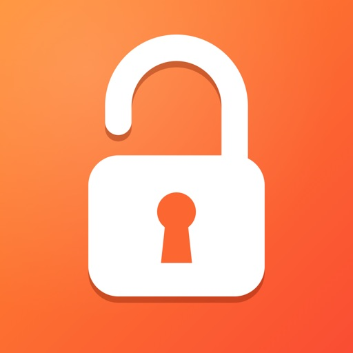
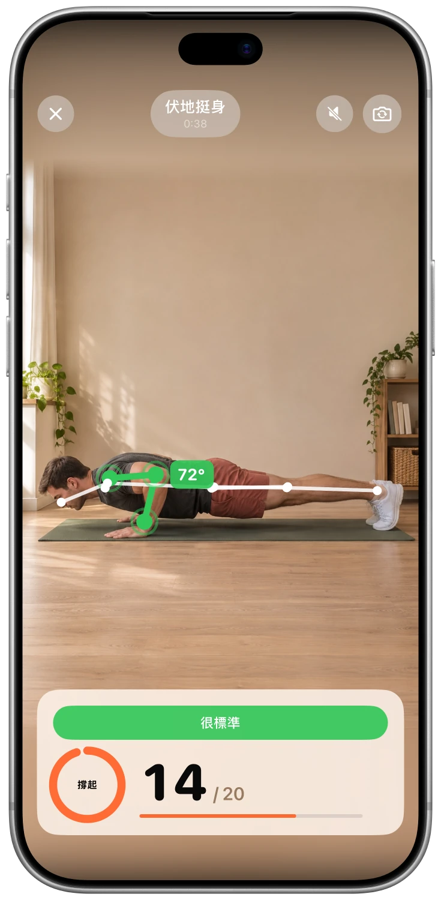

選擇要限制的 App
選擇希望減少使用的 App。Unlocky 使用 Apple 的「螢幕使用時間」功能來鎖定它們。

Unlocky

實際應用程式畫面
功能特色
選擇希望減少使用的 App。Unlocky 使用 Apple 的「螢幕使用時間」功能來鎖定它們。
選擇伏地挺身、深蹲或開合跳。iPhone 相機會即時計算動作次數並提供回饋。
自行設定獎勵和每日上限。獲得的時間只在使用所選 App 時扣除，用完後會重新鎖定。
看看應用程式
呈現真實螢幕畫面，讓您更了解應用程式的內容。
FAQ
開始使用前，先了解這些。
Unlocky 使用 Apple 的「螢幕使用時間」功能。您可以在設定過程中選擇應用程式並授予權限。您可以在 iPhone 的「設定」中撤銷這些權限。
Unlocky 不會錄製你的影片。相機畫面會直接在你的 iPhone 上即時分析。影片和照片不會被儲存或上傳。
可以。選擇伏地挺身、深蹲或開合跳，並設定每組動作可換取多少分鐘。每日上限幫助你控制使用時間。
是的。Unlocky 沒有訂閱或付費牆。它需要一部搭載 iOS 17 或更高版本的 iPhone。
免費・無訂閱・無需帳戶

請按照自己的步調運動，如果感到任何不適，請停止。如果您有任何健康問題，請在開始新的運動計畫之前諮詢醫生。